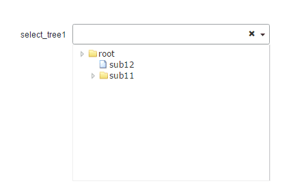

- Horn
- Horn._Pagebar-pagebar
- Horn.Base
- Horn.ButtonPanel
- Horn.Calendar
- Horn.CalendarGroup
- Horn.Checkbox
- Horn.CheckboxGroup
- Horn.Combox
- Horn.DataGrid
- Horn.Field
- Horn.FieldSet
- Horn.Form
- Horn.Grid
- Horn.HiddenField
- Horn.Label
- Horn.Menu
- Horn.MessageBox
- Horn.PageBar
- Horn.Panel
- Horn.Password
- Horn.PasswordGroup
- Horn.QueryTable
- Horn.RadioGroup
- Horn.Screen
- Horn.SelectTree
- Horn.TabPanel
- Horn.TargetSelect
- Horn.Textarea
- Horn.Textfield
- Horn.Tip
- Horn.TypeField
- Horn.Util
- Horn.Validate
- Horn.Window
- Horn.ZtreePanel
树形下拉选择组件
集成了ztree作为下拉树实现，通过点击输入框下拉树选择
依赖组件
- 第三方ztree 3.5版本组件
适用范围
适用于下拉控件展示形态为树形结构的应用场景除非您非常了解此组件的使用场景，否则不建议使用此组件
树形JSON格式
- id: 树节点的唯一标示
- pId: 父亲节点的id
- name: 树节点显示的名字
使用示例
示例1:数据源为静态数据
示例2：数据源为URL，异步请求
属性
注意：组件的id、name属性只能是英文字母开始，由英文字母、数字和下划线组成，命名时应考虑易识别，不要太长，不要和其他组件重复（表单内的组件除外）。
| 名称 | 类型 | 描述 | 默认值 |
|---|---|---|---|
| id | String |
组件的唯一标示 示例：无 |
"" |
| name | String |
表单提交时的名称 示例：无 |
"" |
| cols | String |
表单组件跨列数，默认为1 示例：无 |
"1" |
| hiddenLabel | Boolean |
隐藏标签（也就是label属性）。适用场景：单独使用一个组件，但是又不想要label的。不推荐混合适用，否则布局会乱。 示例：无 |
false |
| label | String |
表单组件的名称 示例：无 |
"" |
| afterClear | String |
清空值后需要callback的事件配置 示例：#select_tree({
"id":"select_tree",
"name":"select_tree",
"checkMode":"checkbox",
"afterClear":"afterClearFn",
"url":"$appServer.get('/test/ztree/asynTree.htm')"})
#jscode()
function afterClearFn(){
}
#end
|
"" |
| disabled | Boolean |
组件的禁用状态，被设置禁用状态的组件，无法获得焦点，不参与表单校验（不会阻止表单提交），不会参与表单提交并且其所有校验状态都会消失，不可编辑，但是可以通过setValue、reset等API修改表单的值； true表示禁用，false表示正常状态 示例：无 |
false |
| data | String |
同步加载，静态数据 示例：'[{"id":"1","name":"root"},{"id":"21","name":"sub11","pId":"1"},{"id":"22","name":"sub12","pId":"1"}]'
|
|
| url | String |
组件异步请求的数据地址，默认不需要此项，使用框架提供的地址。 #select_tree({
"id":"select_tree",
"name":"select_tree",
"url":"$appServer.get('/test/ztree/asynTree.htm')"})
|
"" |
| checkMode | String |
选择模式"checkbox","radio" #select_tree({
"id":"select_tree",
"name":"select_tree",
"checkMode":"checkbox",
"url":"$appServer.get('/test/ztree/asynTree.htm')"})
|
|
| search | Boolean |
是否使用模糊搜索,默认不使用，搜索出来的树节点高亮显示 示例：#select_tree({
"id":"select_tree",
"name":"select_tree",
"checkMode":"checkbox",
"url":"$appServer.get('/test/ztree/asynTree.htm')",
"search":true})
|
false |
| filterBy | string |
根据特定属性进行模糊搜索,如果配置了filterBy则自动打开模糊查询，filterBy可以配置为节点name或者id。 name ：根据树节点名称，id:根据树节点id过滤 示例：无 |
name |
| onCheck | String |
下拉树选中时，回调函数方法 示例：#set($dataT='[{"id":"1","name":"根","pId":""},{"id":"21","name":"sub11","pId":"1"},{"id":"22","name":"sub12","pId":"1"},{"id":"212","name":"sub111","pId":"21"},{"id":"221","name":"sub211","pId":"22"},{"id":"212","name":"sub11sas","pId":"21"}]')
#select_tree({
"id":"select_tree",
"name":"select_tree",
"label":"select_tree",
"disabled":false,
"data":$dataT,
"expandFirst":false,
"filterBy":"id",
"check":"required",
"onCheck":"onCheck"
})
#jscode()
function onCheck(){
console.info(Horn.getComp("select_tree2").getSelectedNodes());
}
#end
|
"" |
| emptyText | String |
emptyText属性(此属性当值为空时，会在输入框显示提示语)； 示例：#select_tree({
"id":"select_tree",
"name":"select_tree",
"label":"select_tree",
"disabled":false,
"data":$dataT,
"expandFirst":false,
"filterBy":"id",
"check":"required",
"onCheck":"onCheck",
"emptyText":"请选择"
})
|
"" |
| confirm | boolean |
点击X按钮清空值时是否需要确认提示，默认为false； 示例：#select_tree({
"id":"select_tree",
"name":"select_tree",
"label":"select_tree",
"disabled":false,
"data":$dataT,
"expandFirst":false,
"filterBy":"id",
"check":"required",
"onCheck":"onCheck",
"confirm":true
})
|
false |
方法
| 名称 | 参数 | 描述 |
|---|---|---|
| setEnable | (enable) |
设置表单是否可用 参数: |
| setValue | (value) |
设置下拉树的值，必须传递树节点的id值，如果id值不存在则设置为空(注：只能设置单个节点)。 参数:##设置默认值为根节点
Horn.getComp("select_tree").setValue("1");
|
| getSelectedNodes | () |
获取 selectTree 当前被选中的节点数据集合 返回值:#set($dataT='[{"id":"1","name":"根","pId":""},{"id":"21","name":"sub11","pId":"1"},{"id":"22","name":"sub12","pId":"1"},{"id":"212","name":"sub111","pId":"21"},{"id":"221","name":"sub211","pId":"22"},{"id":"212","name":"sub11sas","pId":"21"}]')
#select_tree({
"id":"select_tree",
"name":"select_tree",
"label":"select_tree",
"disabled":false,
"data":$dataT,
"expandFirst":false,
"filterBy":"id",
"checkMode":"radio",
"check":"required",
"onCheck":"onCheck"
})
#jscode()
function getSelectedNodes(){
Horn.getComp("select_tree").getSelectedNodes();
}
#end
|
| getValue | () |
获取下拉树的值列表 参数: |
| getText | () |
获取节点名称值 参数: |
| getPid | () |
获取节点的父id值 参数: |
Defined in: SelectTree.js